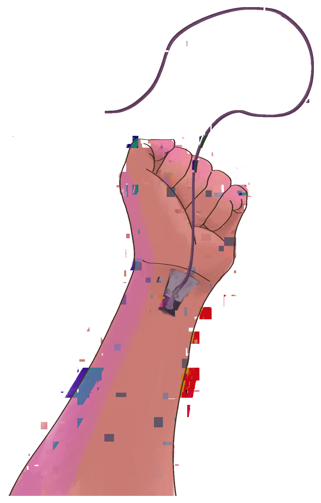

Onze wereld wordt steeds meer gevormd door bedrijven die niet ons welzijn, maar hun eigen winst vooropstellen. Het web was ooit een plek waar mensen ideeën en meningen konden delen en zichzelf konden zijn. Tegenwoordig hebben grote technologiebedrijven veel te veel invloed op hoe we het internet gebruiken. Alles is erop gericht om onze aandacht zo lang mogelijk vast te houden. Je opent je telefoon en wordt meteen overspoeld met reclames, producten die je niet nodig hebt en mensen die laten zien hoe perfect hun leven is. Je scrolt verder en verder, terwijl bedrijven aan iedere klik proberen te verdienen.
Maar wat als het web niet langer een product was dat aan ons verkocht wordt, maar een wereld die we zelf kunnen vormgeven?
Stel je voor dat je thuiskomt, op de bank gaat zitten en een kabel uit je onderarm trekt. Je sluit hem aan op je computer en binnen enkele seconden ben je verbonden. Alles om je heen verdwijnt en je staat midden in een gigantische digitale stad. Neonlichten verlichten de straten, hologrammen zweven tussen de gebouwen en overal kun je nieuwe plekken ontdekken. Je bent niet langer iemand die naar het internet kijkt, maar iemand die er daadwerkelijk in staat.
Een digitale wereld waarin je met vrienden kunt afspreken, onbekende plekken kunt verkennen en je eigen omgevingen kunt bouwen. Misschien maak je een digitale kunstgalerie, ontwerp je een complete stad of bezoek je werelden die door andere mensen zijn gemaakt.
Een wereld waarin niet alles wordt bepaald door bedrijven die zoveel mogelijk geld willen verdienen. Geen eindeloze reclames die je aandacht opeisen of algoritmes die bepalen wat je te zien krijgt. De mensen die deze wereld gebruiken, moeten ook invloed hebben op hoe die werkt.